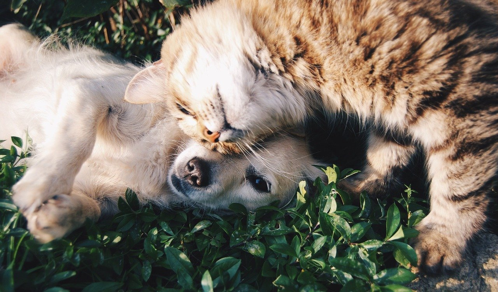

Ayúdalos
Si los animales no son adoptados, permanecen en el refugio recibiendo los cuidados y atenciones de los voluntarios.
Apoyanos
Somos una organización especializada en la ayuda a perros y gatos abandonados y/o maltratados.